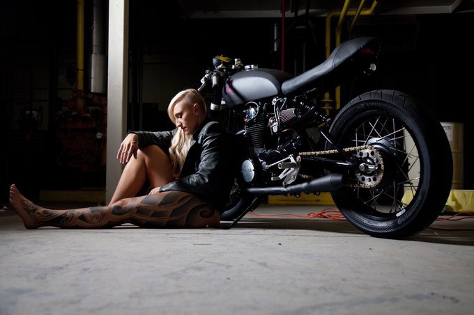
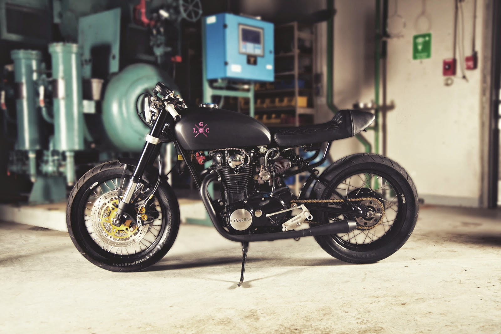

La primera Búsqueda
"¿Como se llama esa moto?"
Supongo que nunca fui un fanático del motociclismo, en realidad siempre considere una moto como un medio de transporte simple, nada del otro mundo, usado por el personal de cobranza de tiendas departamentales o repartidores de comida.
Lo que cambio mi forma de pensar fue ver un programa en el conocido Discovery turbo. No tengo mucha información al respecto en realidad, y de hecho por más que busque y traté de descubrir el nombre del programa así como cuando lo transmitían, no logre encontrar nada.
Lo que si recuerdo fue como mostraban la construcción de una motocicleta a la que ellos denominaron como perteneciente al estilo “Cafe Racer” que construían para una deportista olímpica canadiense.
Y también el hecho de que ellos estaban con un problema debido al tiempo de entrega, y no estaban consiguiendo un motor, o algo así… El punto culminante de ese programa fue cuando consiguieron el motor y estaban ajustando los carburadores, en este punto un tercer constructor de motocicletas, quien había proporcionado información acerca de donde encontrar el motor, tomo un artefacto que el mismo había construido, una especie de reloj para sincronizar los carburadores casero que los ayudo a regularlos correctamente.
Nuca antes había visto algo similar, aunque al investigar encontré muchos tutoriales para elaborar uno y entender como funcionan, de cualquier forma, en ese momento me pareció una muestra de la creatividad y la versatilidad al construir una motocicleta. Supongo que en ese momento fue cuando comencé a buscar información al respecto, que moto era, el porque del nombre del estilo, todo lo que eso implicaba.
En esta imagen se puede apreciar mejor dicha motocicleta
